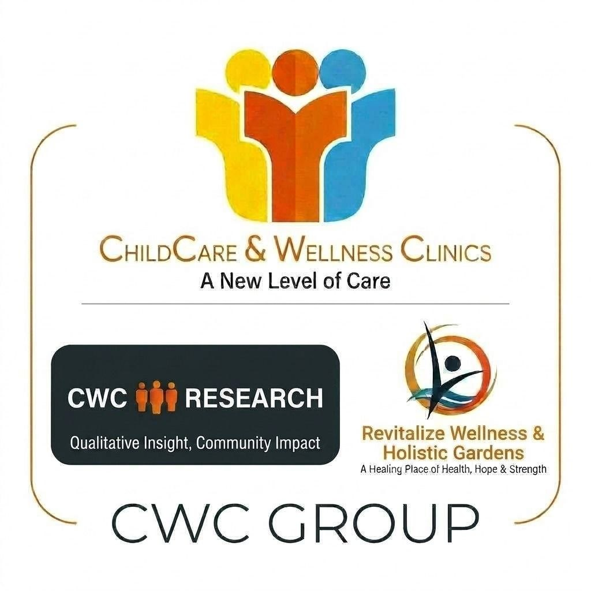

CW Research Division
Qualitative Insight. Community Impact. A New Level of Care.

CWC (Childcare & Wellness Clinics) is a Nigerian healthcare organization founded in 2012. We are headquartered in Abuja, with branch offices in Maiduguri and Kano, and a satellite branch in Adamawa. Our work is focused in Northeast Nigeria, where communities continue to face the effects of insurgency and ongoing humanitarian crises. CWC operates alongside the Nur Alkali Development Initiative (NADI), a humanitarian branch established in 2014 and based in Maiduguri, Borno State.
The CWC Research Division is the research arm of CWC. We combine healthcare service delivery with qualitative research so that the work we do is informed by the people and communities we serve. Our team includes anthropologists, public health specialists, social scientists, and humanitarian field workers. Across northern Nigeria, we have more than 40 trained qualitative field researchers supporting this work.
CWC research is led by Dr. Yashua Alkali Hamza, MD, PhD, a Consultant Paediatrician, Public Health Specialist, Fellow of the West African College of Physicians, and MPH graduate of the University of Liverpool. Before joining CWC, Dr. Hamza served as Head of Paediatrics at Murtala Mohammed Specialist Hospital in Kano, one of the largest hospitals in Sub- Saharan Africa. She has also consulted for the Harvard School of Public Health, the Institute of International Education, the Packard Foundation, and the Clinton Foundation.
Nur Alkali Development Initiative (NADI)
A humanitarian branch established in 2014, based in Maiduguri, Borno State.
Our goal is simple: provide care, learn from communities, and use that knowledge to improve services where they are needed most.
Our Services & Humanitarian Reach
Community-Centered Research
Multi-State Presence Humanitarian ImpactCW Research works in Northeast Nigeria, with branches in Maiduguri, Kano, and Adamawa.These are areas affected ov insurgency, displacement. food insecuritv, and poor maternal health outcomes. We focus on communities where research can directly support service delivery and program decisions.
Our team handles community needs assessments, qualitative research and focus groups, program evaluation, and partner capacity building. We work with NGOs, health organizations, government agencies, and faith-based groups on studies and programs that need local insight and practical field experience.
Community Needs Assessments
We assess service gaps, access barriers, and the main issues affecting families and children.
Qualitative Research & Focus Groups
We run interviews and focus groups to understand what people are experiencing and how they talk about their needs.
Program Evaluation & Outcome Tracking
We help partners review what is working, what is not, and what needs to change.
Partner Capacity Building
We train partner teams in research methods, dala collection, reporting, and basic analysis
We Research has collaborated with London School of Hygiene and Tropical Medicine, Harvard School of Public Health, University of Geneva. Schlumberger Foundation, and Institute of International Education. In Nigeria, we have also worked with Society for Family Health Nigeria, Common Heritage Foundation Nigeria, and Institute of Human Virology Nigeria. We are also part of the PULSE project, which focuses on community-led vaccine deployment strategies.
We recieved a a capacity-building grant from the UK Humanitarian Innovation Hub (UKHIH) to strengthen our research to innovation work in humanitarian settings. That support has helped us build internal capacity so we can do more of this work ourselves.
“It always bothered me that we constantly had to bring in outside consultants to fill our qualitative research needs. We valued this kind of work deeply - we were eager to cultivate our own team.
Dr. Yashua Alkali hamza and the CWC team have written and published on community health worker programs, focus group methods, facility delivery, maternal and newborn health, and the experiences of pregnant adolescents in northern Nigeria. Recent and related publications include:
- "A seamless transition: how to sustain a community health worker scheme within your health system in Gombe state, northern Nigeria" — Health Policy and Planning, 2021
- Improving the use of focus group discussions in low-income settings" - BMC Medical Research Methodology, 2020
- "Everything is from God, but it is always better to get to the hospital on time" - A qualitative study on facility delivery in Gombe State, Nigeria - Global Health Action, 2020
- "The development sector is a graveyard of pilot projects!" - Six critical actions for externally funded implementers to foster scale-up of maternal and newborn health innovations in LMICs - Global Health, 2018
- "A qualitative study of the scalability and sustainability of the Village Health Worker scheme in Gombe State, Nigeria" - IDEAS/LSHTM, 2017-2018
- "Experiences of Married, First-Time Pregnant Adolescents When Seeking Care in Kano State" - Walden Dissertations and Doctoral Studies 2021
If you are looking for support with community research, fieldwork, or evaluation in Northeast Nigeria, CWC Research is open to new partners and projects. We can help with short term assessments as well as longer research relationships.